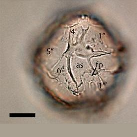
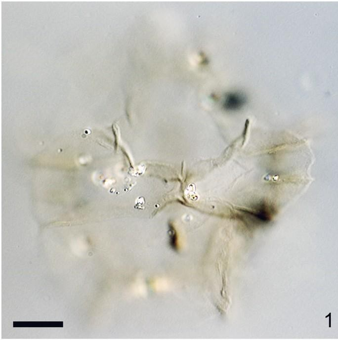
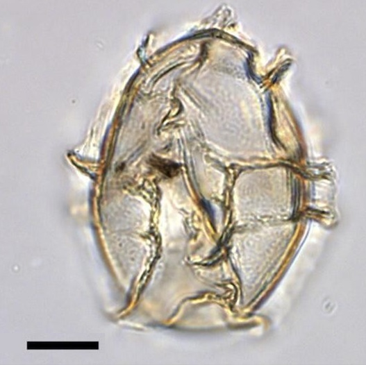
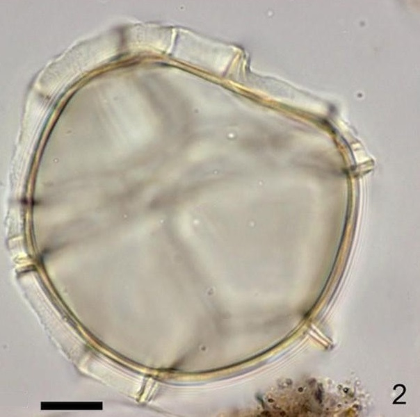
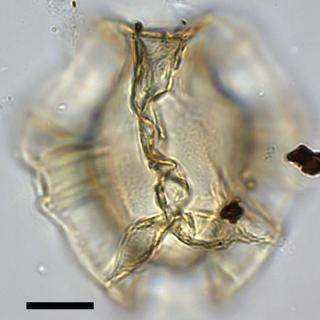

CYSTS LIST
- Alexandrium
- Archaeperidinium/RBSC
- Brigantedinium/Protoperidinium
- Diplopsalopsis/Protoperidinium
- Dubridinium
- Gymnodinium
- Impagidinium
- Lejeunecysta
- Nematosphaeropsis
- Peridinioids
- Polykrikos
- RBSC/Protoperidinium
- Selenopemphix
- Spiniferites
- Stelladinium
- Transparent/Hollow
- Transparent/Solid
- Transparent/Spherical
- Trinovantedinium
- Votadinium
IMPAGIDINIUM
Surface |
Shape |
Septa |
Remarks |
Species |
Central body (um.) |
Image |
Finely granulateTransparent |
OvoidalSmall apical boss |
Variable heightSmoothHigher at triple junctions |
Small sizeSpiky coalescence of the septa |
Impagidiniumaculeatum | 32 to 35 (D) |
|
Finely granulateTransparent |
Subspherical to ellipsoidal |
Variable heightSmoothLow height: 1.3 to 2.4 |
Apical bossIntratabular ridges |
Impagidiniumcaspienense | 34 to 39.4 (D) |
 |
Finely granulateTransparent |
Spherical to ellipsoidal |
Finely granulate of uniform height7 to 13.7 um. (height) |
Displaced 2 or 3 times its own width |
Impagidiniumjaponicum | 38 to 55 (L)34 to 53 (W) |
 |
Smooth to chagrinateTransparent. Pale |
SphericalThin wall (folded membranous) |
High suturalConstant height except in ventral area |
Fine radial striaeLess expression of tabulation on ventral area |
Impagidiniumpallidum | 49 to 63 (D) |
|
Finely granulateTransparent |
OvoidalCan be present apical protrusion |
Smooth and constantParatabulation well expressed |
Smaller sizeElongate bodyLess expression of tabulation on ventral area |
Impagidiniumparadoxum | 28 to 31 (D) |
 |
SmoothTransparent |
Ovoidal |
Smooth, low, robustHeight less than 1/3 of inner bodyReduced tabulation in the ventral region |
Straight and smooth contact between septa and cyst surface |
Impagidiniumpatulum | 47 to 65 (D) |
 |
SmoothTransparent |
Ovoidal to elongate |
Smooth, regularly curvedHeight: 2 to 4 |
Crenulate septa |
Impagidiniumplicatum | 24 to 34 (D) |
|
GranulateTransparent |
Spherical to ovoidalPronounced apical protuberance |
Separate irregularly, notably at triple junctionsIrregularly curved |
Coarse septa bases, irregularly looking line |
Impagidiniumsphaericum | 41 to 57 (D) |
|
MicrogranularTransparent |
OvoidalPronounced apical protuberance |
High sutural septa, have fine radial striaeIrregularly curvedHeight: 5 to 10 |
Shorter sizeFine radial striaeLong septa height |
Impagidiniumstrialatum | 26 to 38 (D) |
 |
ScabrateTransparent |
SubsphericalPronounced apical protuberance |
Variable height, septa irregularRaised bosses in gonal and intergonal positionHeight: 5 to 10 |
Cavateness of the septa |
Impagidiniumvariaseptum | 47 to 75 (D) |
|
Smooth to chagrinateTransparent. Pale |
Ovoidal |
Membranous and highSmooth distal marginsHeight: 19 to 25 |
Membranous and high septaCingulum reflected by one septum |
Impagidiniumvelorum | 47 to 53 (D) |
|
Smooth to slightly granular |
Spherical to ovoidal |
Ocurrence of processes |
Process length: 2-5 um. |
Gonyaulaxbaltica | 35 to 49 (L)31 to 44 (W) |